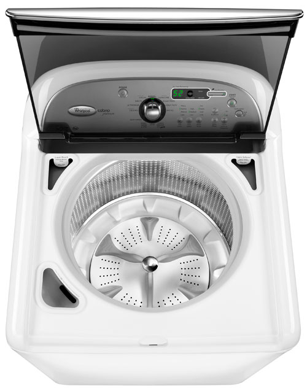

A washing machine that suits your needs.

If you have a small laundry room (or just a laundry corner)
Full-sized washers can be 24 to 30-plus inches wide (and some machines sport bulky, contoured fronts that add to the width), so start by grabbing your tape measure. Jot down the dimensions of your space, but also check that the washer will fit through the hallways and doorways on the way into the room. And consider other limiting factors, such as a washer door that will bang into the wall every time you open it. If you're faced with a super-narrow space, a front loader that stacks with the dryer may be your best bet.

If your laundry room isn't in the basement
First, make sure the floor is properly reinforced for the weight of the machines. You may want a quieter model with features that reduce vibration and noise during the spin cycle so it's not disruptive to your daily life. And think about splurging for a "fashion" color, since it's likely your machine may be seen by guests more often than if it were hidden downstairs.
If you have a ton of wash to do
The tub dimensions are most important, and can range from about 2.45 cubic feet up to 5.6 cubic feet. You'll find the largest capacity on a front loader or in a top loader without the central agitator. And consider bells and whistles like programmable settings (so older kids can help do their laundry with ease) or a pedestal that will save your back from endless stooping
o If you want to conserve water and electricity
Front loaders use way less water than traditional top loaders, which have to fill up entirely for the wash and rinse cycles. Opt for an Energy Star model, which reduces electricity and water use by 20% and 35%, respectively, over non-rated models. And check out those Energy Guide labels as a basis for comparison from model to model. However, remember that your actual costs will vary, based on your usage and the utility costs in your area.
If you're always fighting tough stains
In our tests, front loaders provided better cleaning results than top loaders. Look for a machine with a special stain-remover or presoaking cycles, or one with a steam feature. A "cool" temperature setting that mixes in a bit of hot water with the cold will help powdered detergent dissolve completely for better stain removal.
If you're particular about clothing care
You'll prefer a front-loader or a top-loader without the agitator, which can cause clothing to tangle and is harder on fabric. Some higher-end models have nifty special cycles designed to clean specific materials, from denim to towels to comforters to hand-washables, and more. Also look for custom features like steam for better stain removal, adjustable spin speeds to reduce tangling, and sanitizing cycles to kill germs.
